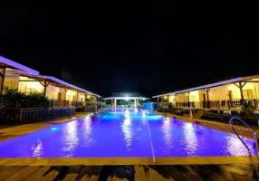

ANNIKA ISLAND RESORT
Annika Island Resort is a beautiful getaway in Santa Fe, Bantayan Island. Surrounded by stunning beaches, it offers cozy accommodations and friendly service. Guests can enjoy relaxing by the pool, exploring the nearby shores, or indulging in delicious local dishes. With a peaceful atmosphere and plenty of activities, Annika Island Resort is the perfect place for a memorable vacation!

Exciting Activities at Annika Island Resort
- Beach Volleyball: Join in for some fun on the sand with friends and family!
- Snorkeling Adventures: Discover vibrant marine life in the crystal-clear waters.
- Island Hopping Tours: Explore nearby islands and hidden gems of Bantayan.
- Local Cuisine Cooking Classes: Learn how to cook delicious Filipino dishes.
- Relaxing Spa Treatments: Pamper yourself with soothing massages and treatments.
- Kayaking & Paddleboarding: Explore the beautiful coastline by water.
- Fishing Trips: Try your hand at local fishing with our experienced guides.
- Nature Hikes: Discover the island’s lush natural beauty on foot.
About Annika Island Resort
Located in the serene area of Santa Fe on Bantayan Island, Annika Island Resort offers a peaceful and beautiful escape from the everyday hustle. The resort is set in a tropical paradise, surrounded by crystal-clear waters, white sandy beaches, and lush vegetation. Whether you're here for a relaxing retreat or an adventure-filled vacation, Annika Island Resort provides a unique and enriching experience that guests will cherish forever. With various accommodation options ranging from beachfront villas to garden cottages, you’ll find the perfect place to stay. The resort also offers excellent dining options, featuring a combination of local Filipino flavors and international cuisine.
What Our Guests Are Saying
"Annika Island Resort is a dream come true! The staff are incredibly welcoming, and the location is absolutely stunning. I’ll definitely be back!" - Jane D.
"We had the best time at Annika. The activities were so much fun, and the food was delicious. Highly recommend it!" - John S.
"A perfect getaway for anyone looking to escape the city. Beautiful beaches, great facilities, and unforgettable experiences!" - Emily R.